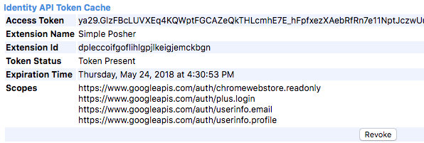

Features
Item Sharer
Shares items from your closet, others’ closets, the main feed, Posh Parties—pretty much anywhere! You can select a number of items to share, share the whole page, or infinite share so you can leave this module running while you focus on other tasks. You can also Edit - Next - List share items from your closet.
Auto & Feed Followers
If you’re seeking to increase your following by following others, look no further! This module automatically follows all users on any closet’s ‘following’ or ‘followers’ pages. The Feed Follower follows users from any feed page—the homepage, Posh Parties, etc.
Auto-Commenter
Designed for the purpose of welcoming new Poshers, this module allows you to leave a friendly comment on Meet the Posher listings. You can splice in the user’s first name to your comment by typing [user].
Newsfeed Activity Returner
Never worry about returning shares and follows! This module returns all follows and closet shares from each user, and returns an additional share for each like from that user.
Console
The extension features a handy console window, so you can keep track of all your activity and see what items were shared, what comments were left, and who was followed.

ReCaptcha Adaptive, Safe to Use
Every module in Simple Posher is designed to stop running and send the user an alert if a Google reCaptcha checkbox appears. Each module is also adapted to minimize the appearance of these checkboxes altogether, so you can run Simple Posher and be stress-free!
Demo
Pricing
Simple Posher is free to try and only $9.99 a month to buy--much less expensive than similar Poshmark apps & Poshmark bots. For this monthly fee, you receive:
- Ongoing service and support.
- Unlimited free upgrades.
- Input into future features like a mobile app and more!
All subscriptions are managed through payments.google.com.
News & Updates
Updates 05/01/19:
Released a small patch this morning to add error codes & disable scroll pagination (adding new items on scroll) in closets when the item sharer is running, which causes multiples of items to appear.
Updates 04/30/19:
Important update!
Hi guys! Just pushed the Simple Posher 2.0 update that fixes several bugs and optimizes several parts of the extension. The Item Sharers & Activity Returner have undergone almost total re-writes which will eliminate several common errors and make Simple Posher more intuitive to use! Here's what's most important to know:
How to Use & FAQ
Item Sharer• My Feed Sharer• Party Sharing• Edit Sharer• Auto Follower• Feed Follower• Commenter• Activity Returner• Payment• General/OtherParty Sharing
Party sharing can be completed from anywhere the Item Sharer or works, as well as on the My Feed page. Here's how to use this feature:
- The current party (or next party, on the My Feed page) will be listed within the extension next to "Current Party." If no parties are happening, it will say "no parties happening now."
- Navigate to whatever page you want to share to the party from, e.g. your closet.
- The keywords tell the Party Sharer which items to to share to the current party. You can input keywords for anything you want to share (separated by commas). For example, for the "Lululemon, Adidas, Nike, Athleta, and Electric Yoga Party" my keywords would be: lululemon, adidas, nike, athleta, electric yoga. It is not case sensitive. For something like the "Best in Dresses & Skirts Party" my keywords could be: dress, gown, skirt.
- Use singular words (e.g. "dress" instead of "dresses"). The sharer will find any instance of this word, even if it's part of another word (e.g. "sundress").
- For a broader category party like "Best in Kids", you can choose to show the relevant items in your closet only (click the "Kids" category), and then check the "Share all Items to Page" checkbox. Both this checkbox and the "Share to Party Checkbox" must be checked to share items to party.
- When you've entered all of your keywords, click the "Save Keywords" button.
- Click the Item Sharer start button in closets or on most of Poshmark. If on the My Feed page, click the My Feed Sharer start button. From here, everything will function like the regular Item Sharer.
Auto Follower
The Auto Follower can follow users from any user’s followers or following page (e.g. poshmark.com/user/poshmarkuser/followers), including your own if you would like to follow back all of your followers. To use,
- Navigate to the page where you would like to follow users.
- Once all users are loaded, click ‘Start’ under ‘Auto Follower.’
- The module will begin following all unfollowed users on the page.
What do I do if the reCaptcha pops up?
- Check the box under ‘I am not a robot’ and wait for the green checkmark to appear.
- Press 'Start' again.
Feed Follower
The Feed Follower can follow users from almost any page on Poshmark-—essentially anywhere the Auto Follower doesn’t cover. To use,
- Navigate to the page where you would like to follow users.
- Scroll down to load all of the users you would like to follow. There are 48 users on a typical Poshmark page (assuming each item on the page is from a different user).
- Once all users are loaded, click ‘Start’ under 'Feed Follower.’ This module will navigate to the first user’s profile, follow them, and continue on to the next user until all users are followed.
What do I do if the reCaptcha pops up?
- Check the box under ‘I am not a robot’ and wait for the green checkmark to appear.
- Navigate back to the page where you’d like to follow users.
- Press 'Start' under 'Feed Follower'.
Auto Commenter
The Auto Commenter can leave comments on user’s listings. Its intended use is to greet new Poshers on their ‘Meet the Posher’ listings, but you could also use it, for example to leave positive comments on other listings. To use it to greet new Posters,
- Navigate to the New Poshers page by clicking the ‘Go to New Poshers Page’ button.
- Enter in a number for how many comments you’d like to leave. The module will leave one comment on each listing.
- If you would like to follow each user before leaving a comment, click the relevant checkbox.
- Write your comment. If you would like the user’s name (their first name, not their username) to be somewhere in the comment, write [user]. For example, if your comment read “Welcome to Poshmark, [user]!” it would show up on each page with that Posher’s name spliced in, e.g. “Welcome to Poshmark, Amy!”
- Press start. If you checked the ‘follow first’ checkbox, the module will navigate to the user’s profile, follow them, navigate to their Meet the Posher listing, leave a comment, and do the same to the next user. Otherwise, it will navigate directly to their Meet the Posher listing, leave a comment, and move onto the next user until all of the comments have been left.
What do I do if the reCaptcha pops up?
- Check the box under ‘I am not a robot’ and wait for the green checkmark to appear.
- Navigate back to the New Poshers Page.
- Press ‘Start’ under ‘Auto Commenter’.
News Feed Activity Returner
The News Feed Activity Returner returns follows & shares from other users. For each share from a user, the module will share one item from that user’s closet, with an additional share for each like from that user. As usual, it will skip sold items and Meet the Posher listings.
This module can only ‘see’ the activity that is loaded on the page, so be sure to scroll down to load all of the activity you would like to return. For example, in the mornings, I usually load all activity from the previous 8+ hours or so that I was sleeping.
To use this module,
- Navigate to your News Feed.
- If you would like to share from a particular tab, e.g. the Shares tab, click on the tab.
- Scroll down to load all of the activity you would like to return.
- Press ’Start’ under 'Activity Returner'.
- The module will navigate to the first user’s page, follow them, and return all of their shares. If they did not share any of your items, it will not share any of theirs. When it’s done, it will move onto the next user until it has returned activity for the full list of users.
What do I do if the reCaptcha pops up?
- Check the box under ‘I am not a robot’ and wait for the green checkmark to appear.
- Press ’Start’ under 'Activity Returner'.
- Refresh the page and this module will begin running again.
What do I do if 'Page Not Found' comes up?
This means Poshmark couldn't find that user--it's possible they deleted their account. Press the 'Skip to Next User' Button.
I'm on some weird page that says "followed, success: true"?
TBH I'm not sure why this happens, but if you click the back arrow the Activity Returner will continue normally.
What do I do if the Activity Returner has stopped?
This usually happens because a reCaptcha popped up and sat idle for a while. The box will disappear after sitting for a bit.
- Try sharing a few items manually to see if the reCaptcha pops up.
- If so, check the box under ‘I am not a robot’ and wait for the green checkmark to appear.
- Press ’Start’ under 'Activity Returner'.
- Refresh the page.
Payment
How long is the free trial?
The free trial is 7 days. You will be alerted within the extension once the trial is finished.
How do I pay? Is it safe?
All payment is handled through the Chrome web store & Google Payments and is very safe. I do not have access to any of your payment details or identifying information.
How do I edit my payment info?
You can edit your payment information through payments.google.com
Can I cancel my subscription if I don't like it?
You can cancel at any time through payments.google.com. When you cancel, the extension will be automatically removed from your browser, so I recommend waiting until right before your payment renews to get the best bang for your buck.
I paid, but I'm still getting the "free trial ended" message.
This is likely due to a mismatch between the email address that you logged into Simple Posher with and the email you used to pay. Here's how to find out:
- Visit myaccount.google.com/permissions and check whether you see Simple Posher anywhere on that list. If you don't, log into any other Google accounts you may have and check those accounts.
- Look for the email receipt you received from the Chrome webstore when you paid for Simple Posher. Make sure it was sent to the same email address that you gave Simple Posher permission to use.
- If there's a mismatch, visit chrome://identity-internals (copy and paste if the link doesn't work). Search for 'Simple Posher' on that page. You should see something like this: 
- Click the 'Revoke' button underneath 'Scopes'.
- The next time you try to use the extension, it will ask you to log in with a Google account again. Now, login with the same email that you used for payment.
- You may need to close & reopen Chrome.
If this doesn't solve the problem, please fill out our support form at the bottom of the page.
Can I get a refund?
I offer refunds on a case-by-case basis to those who have submitted bug requests/issues I am not able to fix. If you're having any problems with the extension, please fill out our customer support form here
General/Other
None of the modules seem to be working?
Sometimes this happens when the extension is first installed or updated. Please try the following:
If that doesn't help, please contact fill out our customer support form here.
Aren't Poshmark bots not allowed? Can this get me banned?
Short answer: Poshmark bots are discouraged but getting found out is highly unlikely and getting your account banned is even more so.
Long answer: Poshmark does mention in their community guidelines that they discourage automation--this is where they also have rules about what to sell and what not to sell, bullying/harassment--things that sellers get away with frequently. It's unlikely that Poshmark would know you are using the Simple Posher extension because it's designed to mimic human activity as closely as possible (and in fact is designed to run more slowly than you can share so you can leave it running for long periods) and to stop when reCaptchas pop up.
As far as I'm aware, as long as the rest of your activity is within Poshmark guidelines and you aren't harassing other users, they don't really care what people do. More sales for you = more money in their pockets, since they make money every time we do.
That said, the use of Simple Posher is at your own risk. I use Simple Posher in my own closet so I am highly invested in its safety and have a lot of faith in it to work well. I'm always making tweaks to make it better.